Sharing Code between Windows Store and Windows Phone App (PCL + MVVM + OData)
Introduction
This sample has the goal to show how to share code between Windows Store and Windows Phone App.
The initial code sample can be find here:
Creating portable code in Windows Store Apps (PCL + MVVM + OData Services)
Before you start, take a look in this presentation:
Do not do more copy and paste between windows store and windows phone apps
Building the Sample
You only need Visual Studio 2012 and Windows 8, both the RTM version.
Description
Like you can see in Creating portable code in Windows Store Apps (PCL + MVVM + OData Services), you have a Portable Class Library that has model and view model defined! Which has the following targts:
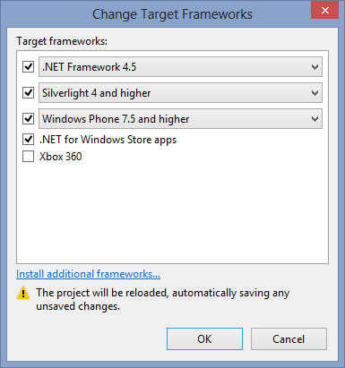
with this i conclude that code is portable and can be used in Windows Phone 7.5 or higher.
We can create the Windows Phone 8 App and Windows Phone 7.5 (with update for 7.8) App and use this code, let's see how.
1. Start creating the Windows Phone ClientApp Project:
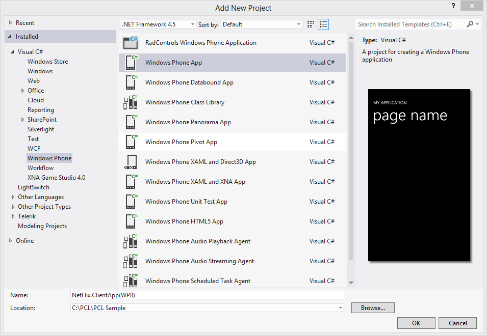
2. After this update the namespace and startup object to:
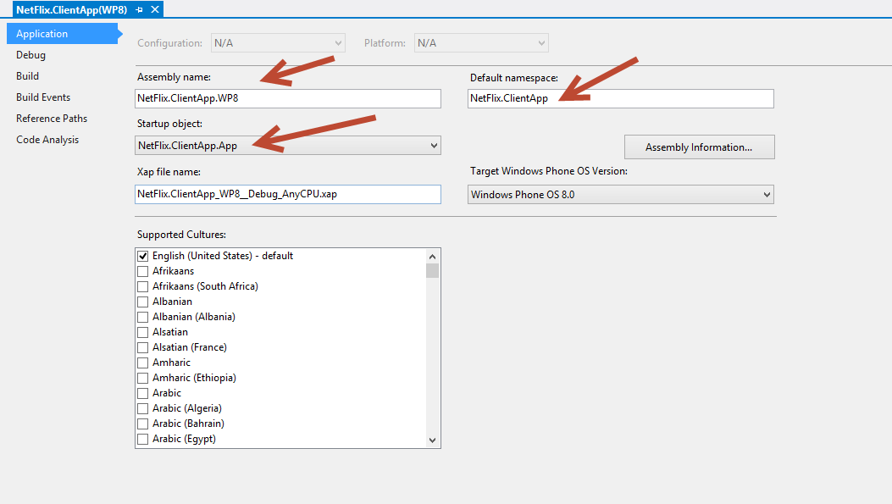
You can create the same for Windows Phone 7.5!
3. Install the MVVM Light (PCL) for each Windows Phone ClientApp project:
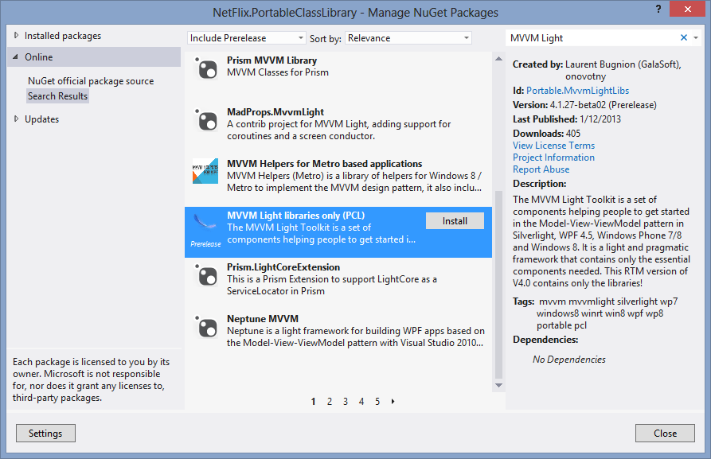
4. Install the Bcl.Async package
See more about it here Async for .NET Framework 4, Silverlight 4 and 5, and Windows Phone 7.5 and 8
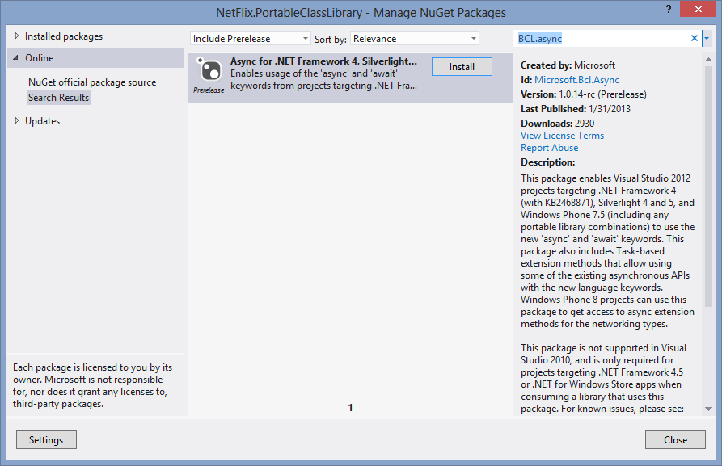
5. Add OData Services
OData Services is not portable, we need to add the Service metadata for each client app or create a separate project for it ( this is a sample, is not necessary and will add in client app).
The metadata used is :http://odata.netflix.com/v2/Catalog/. For understand that i did see Consuming Odata Service in Windows Store Apps (Include MVVM Pattern) is similar for Windows Phone.
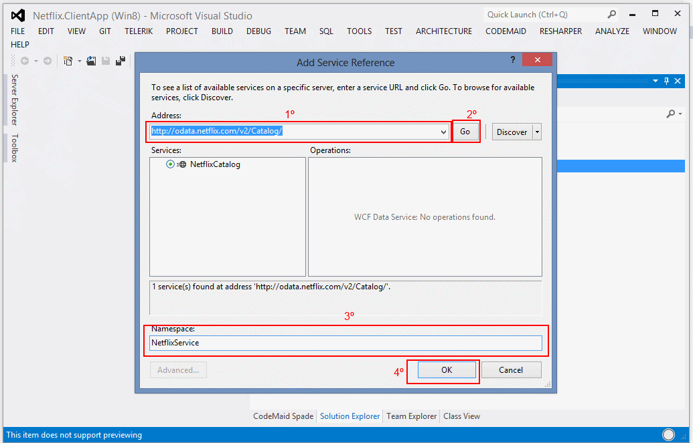
6. Create these folders
- Extensions
- Services
- Styles
- View
- ViewModel
in each Windows Phone ClientApp project, like this:
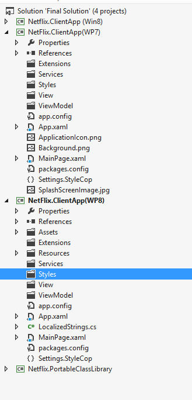
We created the same sctruture from Windows Store App!
Why?
Because make sense and is more simple to undestand all code and more important is because we will reuse code files from Windows Store Apps.
7. Use "Add as Link" for link all files that are inside the following folders:
- Extensions
- Services
- ViewModel

the result will be
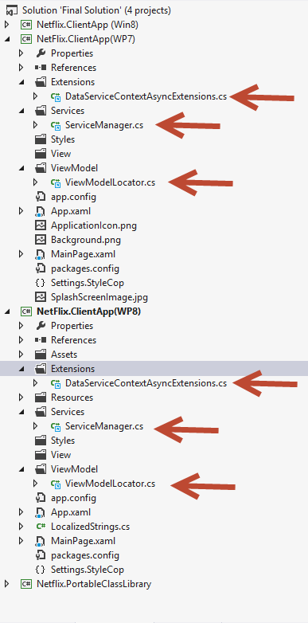
I linked three files that are physically contained inside the Windows Store Client App.
NOTE: Each linked file is unique, is not a copy from the original, each change will represent a change in all projects!
8 . Add the ViewModelLocator to the App.xaml
<viewModel:ViewModelLocator x:Key="Locator"/>
<viewModel:ViewModelLocator x:Key="Locator"/>
If you compile the code, maybe you will find some old dependencies, because in "last refactoring" uses some using that weren´t delete. And because i created Netflix.ClientApp and NetFlix.ClientApp namespace, the F or f made the name to different! Is not important, but is more easy if we keep the same names for that can be shared or similar.
These problems are common and I could create a sample and documentation without them, but i think is important to share it, because always happens to all devs! :)
After this we only need to create the view for show data, let's do it:
9. Create the View, adding content to the page:
Before define the page, prepare the information you will need.
9.1. "Add as Link" the BooleanNegationConverter and BooleanToVisibilityConverter from Windows Store Apps:
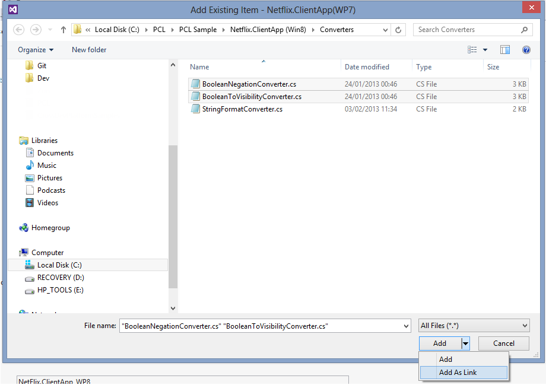
9.2. Create the ResourceDictionary.xaml with datatemplates:
<!-- DataTemplates for MyTitleItemView -->
<DataTemplate x:Key="MyTopDVDMoviesItemTemplate">
<StackPanel Orientation="Horizontal" HorizontalAlignment="Left" Height="120">
<Image CacheMode="BitmapCache" Source="{Binding Item.Image}" Width="82" Stretch="Uniform" Margin="10,10,5,10"/>
<StackPanel Margin="10,10,5,10">
<TextBlock Text="{Binding Item.Name}" Foreground="{StaticResource ForegroundBrush}" TextWrapping="Wrap" Margin="0,0,5,0"/>
<StackPanel Orientation="Vertical" Margin="0,0,10,0" >
<TextBlock TextWrapping="Wrap" Foreground="{StaticResource ForegroundBrush}" Margin="0,0,0,5">Available: <Run Text="{Binding Item.AvailableFrom, StringFormat='\{0:d MMMM yyyy\}'}" /></TextBlock>
</StackPanel>
</StackPanel>
</StackPanel>
</DataTemplate>
<DataTemplate x:Key="MyNewDVDMoviesItemTemplate">
<StackPanel Orientation="Horizontal" HorizontalAlignment="Left" Height="120">
<Image CacheMode="BitmapCache" Source="{Binding Item.Image}" Width="82" Stretch="Uniform" Margin="10,10,5,10"/>
<StackPanel Margin="10,10,5,10">
<TextBlock Text="{Binding Item.Name}" Foreground="{StaticResource ForegroundBrush}" TextWrapping="Wrap" Margin="0,0,5,0"/>
<StackPanel Orientation="Horizontal" Margin="0,10,10,0">
<TextBlock Margin="0,0,5,5" Text="Rating:" Foreground="{StaticResource ForegroundBrush}" />
<TextBlock Margin="0,0,0,5" Text="{Binding Item.Rating}" Foreground="{StaticResource ForegroundBrush}"/>
</StackPanel>
<StackPanel Orientation="Vertical" Margin="0,0,10,0" >
<TextBlock TextWrapping="Wrap" Foreground="{StaticResource ForegroundBrush}" Margin="0,0,0,5">Available: <Run Text="{Binding Item.AvailableFrom, StringFormat='\{0:d MMMM yyyy\}'}" /></TextBlock>
</StackPanel>
</StackPanel>
</StackPanel>
</DataTemplate>
<!-- DataTemplates for MyTitleItemView --> <DataTemplate x:Key="MyTopDVDMoviesItemTemplate"> <StackPanel Orientation="Horizontal" HorizontalAlignment="Left" Height="120"> <Image CacheMode="BitmapCache" Source="{Binding Item.Image}" Width="82" Stretch="Uniform" Margin="10,10,5,10"/> <StackPanel Margin="10,10,5,10"> <TextBlock Text="{Binding Item.Name}" Foreground="{StaticResource ForegroundBrush}" TextWrapping="Wrap" Margin="0,0,5,0"/> <StackPanel Orientation="Vertical" Margin="0,0,10,0" > <TextBlock TextWrapping="Wrap" Foreground="{StaticResource ForegroundBrush}" Margin="0,0,0,5">Available: <Run Text="{Binding Item.AvailableFrom, StringFormat='\{0:d MMMM yyyy\}'}" /></TextBlock> </StackPanel> </StackPanel> </StackPanel> </DataTemplate> <DataTemplate x:Key="MyNewDVDMoviesItemTemplate"> <StackPanel Orientation="Horizontal" HorizontalAlignment="Left" Height="120"> <Image CacheMode="BitmapCache" Source="{Binding Item.Image}" Width="82" Stretch="Uniform" Margin="10,10,5,10"/> <StackPanel Margin="10,10,5,10"> <TextBlock Text="{Binding Item.Name}" Foreground="{StaticResource ForegroundBrush}" TextWrapping="Wrap" Margin="0,0,5,0"/> <StackPanel Orientation="Horizontal" Margin="0,10,10,0"> <TextBlock Margin="0,0,5,5" Text="Rating:" Foreground="{StaticResource ForegroundBrush}" /> <TextBlock Margin="0,0,0,5" Text="{Binding Item.Rating}" Foreground="{StaticResource ForegroundBrush}"/> </StackPanel> <StackPanel Orientation="Vertical" Margin="0,0,10,0" > <TextBlock TextWrapping="Wrap" Foreground="{StaticResource ForegroundBrush}" Margin="0,0,0,5">Available: <Run Text="{Binding Item.AvailableFrom, StringFormat='\{0:d MMMM yyyy\}'}" /></TextBlock> </StackPanel> </StackPanel> </StackPanel> </DataTemplate>
9.3 Create inside the View folder the TitlePage.xaml:
<phone:PhoneApplicationPage
x:Class="Netflix.ClientApp.View.TitlesPage"
xmlns="http://schemas.microsoft.com/winfx/2006/xaml/presentation"
xmlns:x="http://schemas.microsoft.com/winfx/2006/xaml"
xmlns:phone="clr-namespace:Microsoft.Phone.Controls;assembly=Microsoft.Phone"
xmlns:shell="clr-namespace:Microsoft.Phone.Shell;assembly=Microsoft.Phone"
xmlns:d="http://schemas.microsoft.com/expression/blend/2008"
xmlns:mc="http://schemas.openxmlformats.org/markup-compatibility/2006"
FontFamily="{StaticResource PhoneFontFamilyNormal}"
FontSize="{StaticResource PhoneFontSizeNormal}"
Foreground="{StaticResource PhoneForegroundBrush}"
SupportedOrientations="Portrait" Orientation="Portrait"
DataContext="{Binding TitlesViewModel, Source={StaticResource Locator}}"
mc:Ignorable="d"
shell:SystemTray.IsVisible="True">
<!--LayoutRoot is the root grid where all page content is placed-->
<Grid x:Name="LayoutRoot" Background="#B9090B">
<Grid.RowDefinitions>
<RowDefinition Height="Auto"/>
<RowDefinition Height="*"/>
</Grid.RowDefinitions>
<!--TitlePanel contains the name of the application and page title-->
<StackPanel Grid.Row="0" Margin="12,20,0,0">
<TextBlock Text="MY NetFlix Catalog" Foreground="{StaticResource ForegroundBrush}" Margin="9,-7,0,0" Style="{StaticResource PhoneTextTitle2Style}"/>
</StackPanel>
<!--ContentPanel - place additional content here-->
<Grid x:Name="ContentPanel" Grid.Row="1" Margin="12,17,12,0">
<ProgressBar IsIndeterminate="True" Height="20"
Visibility="{Binding IsToShowProgress, Converter={StaticResource BooleanToVisibilityConverter}}"
Foreground="{StaticResource ForegroundBrush}" IsEnabled="{Binding IsToShowProgress}" Margin=" 0,5,0,0"/>
<phone:Pivot>
<!--Pivot item one-->
<phone:PivotItem Header="TOP">
<ListBox Name="lbxTopTitles" ItemsSource="{Binding Groups[0].Items}" SelectionMode="Single" ItemTemplate="{StaticResource MyTopDVDMoviesItemTemplate}" />
</phone:PivotItem>
<!--Pivot item two-->
<phone:PivotItem Header="New">
<ListBox Name="lbxNewTitles" ItemsSource="{Binding Groups[1].Items}" SelectionMode="Single" ItemTemplate="{StaticResource MyNewDVDMoviesItemTemplate}" />
</phone:PivotItem>
</phone:Pivot>
</Grid>
</Grid>
</phone:PhoneApplicationPage>
<phone:PhoneApplicationPage x:Class="Netflix.ClientApp.View.TitlesPage" xmlns="http://schemas.microsoft.com/winfx/2006/xaml/presentation" xmlns:x="http://schemas.microsoft.com/winfx/2006/xaml" xmlns:phone="clr-namespace:Microsoft.Phone.Controls;assembly=Microsoft.Phone" xmlns:shell="clr-namespace:Microsoft.Phone.Shell;assembly=Microsoft.Phone" xmlns:d="http://schemas.microsoft.com/expression/blend/2008" xmlns:mc="http://schemas.openxmlformats.org/markup-compatibility/2006" FontFamily="{StaticResource PhoneFontFamilyNormal}" FontSize="{StaticResource PhoneFontSizeNormal}" Foreground="{StaticResource PhoneForegroundBrush}" SupportedOrientations="Portrait" Orientation="Portrait" DataContext="{Binding TitlesViewModel, Source={StaticResource Locator}}" mc:Ignorable="d" shell:SystemTray.IsVisible="True"> <!--LayoutRoot is the root grid where all page content is placed--> <Grid x:Name="LayoutRoot" Background="#B9090B"> <Grid.RowDefinitions> <RowDefinition Height="Auto"/> <RowDefinition Height="*"/> </Grid.RowDefinitions> <!--TitlePanel contains the name of the application and page title--> <StackPanel Grid.Row="0" Margin="12,20,0,0"> <TextBlock Text="MY NetFlix Catalog" Foreground="{StaticResource ForegroundBrush}" Margin="9,-7,0,0" Style="{StaticResource PhoneTextTitle2Style}"/> </StackPanel> <!--ContentPanel - place additional content here--> <Grid x:Name="ContentPanel" Grid.Row="1" Margin="12,17,12,0"> <ProgressBar IsIndeterminate="True" Height="20" Visibility="{Binding IsToShowProgress, Converter={StaticResource BooleanToVisibilityConverter}}" Foreground="{StaticResource ForegroundBrush}" IsEnabled="{Binding IsToShowProgress}" Margin=" 0,5,0,0"/> <phone:Pivot> <!--Pivot item one--> <phone:PivotItem Header="TOP"> <ListBox Name="lbxTopTitles" ItemsSource="{Binding Groups[0].Items}" SelectionMode="Single" ItemTemplate="{StaticResource MyTopDVDMoviesItemTemplate}" /> </phone:PivotItem> <!--Pivot item two--> <phone:PivotItem Header="New"> <ListBox Name="lbxNewTitles" ItemsSource="{Binding Groups[1].Items}" SelectionMode="Single" ItemTemplate="{StaticResource MyNewDVDMoviesItemTemplate}" /> </phone:PivotItem> </phone:Pivot> </Grid> </Grid> </phone:PhoneApplicationPage>
and
public partial class TitlesPage
{
/// <summary>
/// Initializes a new instance of the <see cref="TitlesPage" /> class.
/// </summary>
public TitlesPage()
{
InitializeComponent();
}
/// <summary>
/// Called when a page becomes the active page in a frame.
/// </summary>
/// <param name="e">An object that contains the event data.</param>
protected override async void OnNavigatedTo(NavigationEventArgs e)
{
var titlesViewModel = DataContext as TitlesViewModel;
if (titlesViewModel != null
&& (e.NavigationMode == NavigationMode.New || e.NavigationMode == NavigationMode.Refresh))
{
await titlesViewModel.LoadDataAsync();
}
}
}
public partial class TitlesPage { /// <summary> /// Initializes a new instance of the <see cref="TitlesPage" /> class. /// </summary> public TitlesPage() { InitializeComponent(); } /// <summary> /// Called when a page becomes the active page in a frame. /// </summary> /// <param name="e">An object that contains the event data.</param> protected override async void OnNavigatedTo(NavigationEventArgs e) { var titlesViewModel = DataContext as TitlesViewModel; if (titlesViewModel != null && (e.NavigationMode == NavigationMode.New || e.NavigationMode == NavigationMode.Refresh)) { await titlesViewModel.LoadDataAsync(); } } }
There is one point that is diferente from WP8 and WP7.5, is the namespace for pivot control.
XAML cannot be shared, better should´t!
9.4. Define the TitlesPage.xaml as a start page:

10. The output
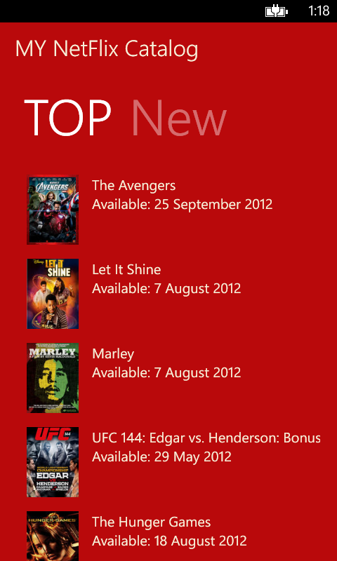
Notes:
1. In inital sample, that was initial source, i did not change the namespace from Netflix.ClientApp to Netflix.PortableClassLibrar, but was because i forgot. You should be aware too. And i did not changed because i am creating a git repository for how wants to see the commit and changes i did.
2. If you want to see the commit and changed i did when i create this sample, you need to get from: (Size limitation don´t allow to add this package here)
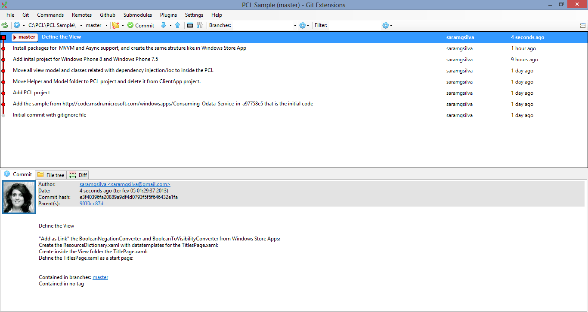
Source Code Files
The solution has the following structure:
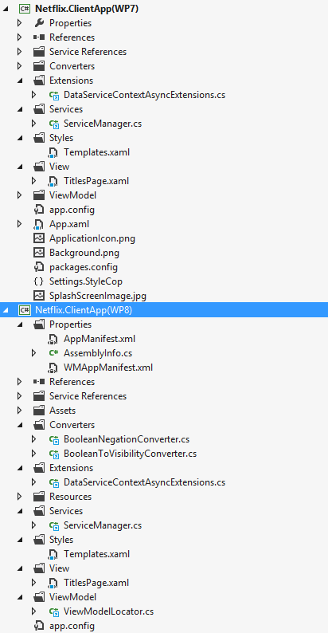
Details:
- IServiceManager.cs has the IServiceManager interface and define the interface for the ServiceManager.
- ServiceManager.cs has the ServiceManager class and it encapsulate the NetFlixService and exposes only the methods that is need in ViewModel.
- FakeServiceManager.cs is the implementation of the IServiceManager, but is a fake data.
- TitlesViewModel.cs has TitlesViewModel class and it is used for binding with the DataContext from TitlesPage.
- ViewModelLocator.cs has the ViewModelLocator class that help to binding the view model with the view.
- ViewModelHelper.cs has the ViewModelHelper class the helps to create grouped data.
- TitlesPage.xaml and TitlesPage.xaml.cs that is the main page.
- Templates.xaml is a resource dictionary that has the DataTemplate for the view.
- NetFlixItemTemplateSelector.cs has the NetFlixItemTemplateSelector that is used for get the ItemTemplate for each item in gridView.
Others References
- Portable Class Library – Articles and Sample References
- Portable Class Libraries – Net Framework 4.0
- Portable Class Libraries – Net Framework 4.5
- Odata services in Portable class library
Run the sample
To debug the app and then run it, press F5 or use Debug > Start Debugging. To run the app without debugging, press Ctrl+F5 or use Debug > Start Without Debugging.
More Information
Ask me on twitter @saramgsilva